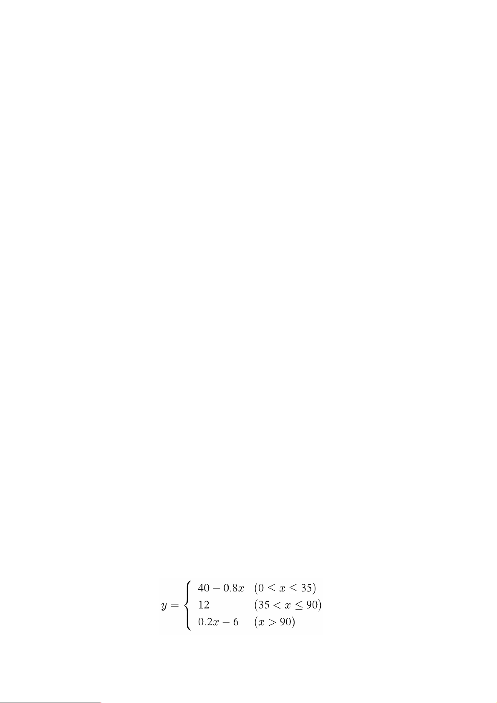
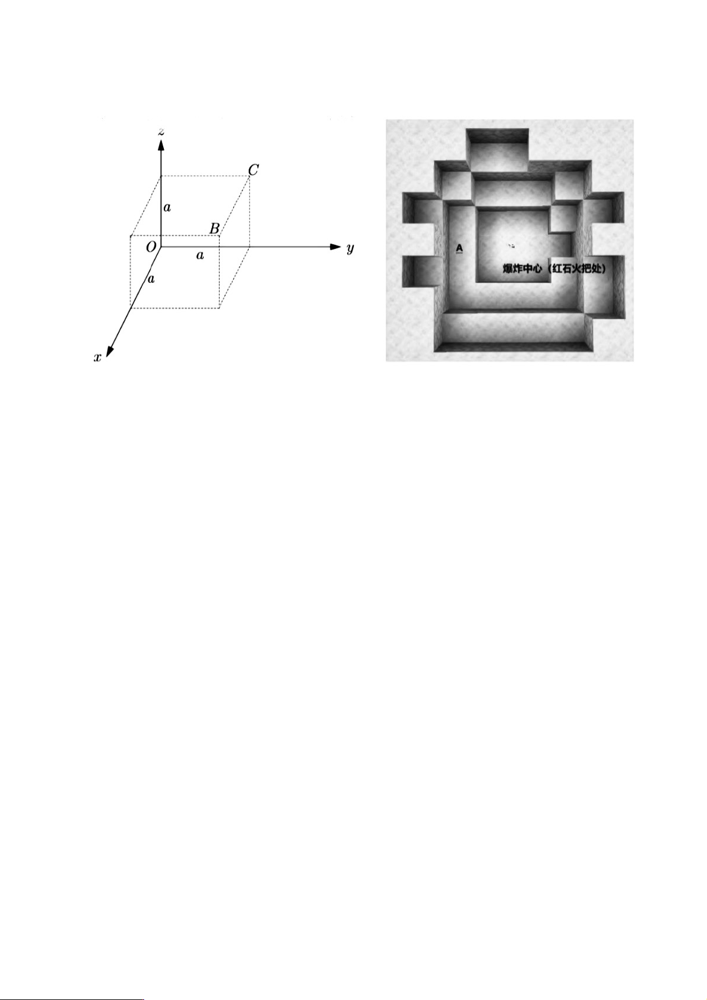

第
1
页 共
11
页
绝密
★
启用前
2026
年
年
年
iGCraftLit
团队统一学业水平
团队统一学业水平
团队统一学业水平
与团队建设能力测试
与团队建设能力测试
与团队建设能力测试
M i n e c r a f t
（
（
（
A
）
）
）
命题：GCraftLit 命题组审题：CaYiHou XinChen
考生须知：
考生须知：
考生须知：
1.
答题前，考生务必使用黑色墨水签字笔在答题卡和本试卷的指定位置，填
写自己的姓名、考生号和座位号。
2.
保持卡面清洁。严禁在答题卡的条形码粘贴区域或图像定位点周围涂写、
污损，否则作答无效。
3.
作答选择题时，选出每小题答案后，用 2B 铅笔将答题卡上对应题目的答
案标号涂黑。如需改动，用橡皮擦干净后，再选涂其他答案标号。作答非选择题
时，必须使用黑色墨水签字笔将答案书写在答题卡各题目规定的答题区域内。超
出答题区域或在试卷、草稿纸上书写的答案无效。
4.
本试卷分为两部分：选择题 39 分，非选择题 81 分，共 23 小题，满分 110
分，考试时间 150 分钟。
一、
一、
一、
选择题：本题共
选择题：本题共
选择题：本题共
8
8
8
小题，每小题
小题，每小题
小题，每小题
3
3
3
分，共
分，共
分，共
24
24
24
分。在每小题给出的四个选项
分。在每小题给出的四个选项
分。在每小题给出的四个选项
中，只有一项是符合要求的
中，只有一项是符合要求的
中，只有一项是符合要求的
。
。
。
1.
《我的世界》生存模式开局玩家自带的物品是？（ ）
A.
木镐
B.
空手
C.
面包
D.
木剑
2.
制作一把木斧，最少需要多少块木板？（ ）
A. 2 B. 3 C. 4 D. 5
3.
酿造药水必须使用的基础方块是？（ ）
A.
酿造台
B.
砂轮
C.
制图台
D.
堆肥桶
4.
输入指令
/tp @a ~ ~10 ~
会产生什么效果？（ ）
A.
全体玩家向上传送
10
格
B.
全体玩家传送至坐标
Y=10
C.
所有实体向上移动
10
格
D.
最近玩家原地上升
10
格

第
2
页 共
11
页
5.
指令
/fill 0 64 0 10 64 10 stone replace air
的作用是？（ ）
A.
把空气替换成钻石块
B.
删除坐标内所有石头
C.
将指定区域空气替换为石头
D.
清除区域内所有实体
6.
红石中继器锁定模式激活后，不会发生的现象是？（ ）
A.
输入信号断开仍保持输出
B.
调整中继器档位不会改变输出时长
C.
侧方红石信号消失才解除锁定
D.
直接破坏中继器会保留锁定状态
7.
已知当前处于单人存档，执行完整指令：
/execute at @s run execute if block ~
~-1 ~ minecraft:grass_block run summon tnt ~ ~5 ~ run particle flame ~ ~10 ~ 0 1
0 0.2 20 force
，下列对整条指令完整运行逻辑描述完全正确的是？（ ）
A.
以执行者坐标为基准，脚下任意方块都会生成
TNT
，同时在
Y=10
处持
续生成火焰粒子，粒子仅对该玩家可见
B.
以执行者坐标为基准，脚下是草方块时，先召唤
TNT
至
Y=5
，随后单独
再运行一条独立指令生成火焰粒子，两条指令互不绑定、会分开判定方
块条件
C.
以执行者自身坐标作为执行原点，仅当脚下一格方块为草方块时，才会
依次执行召唤
Y=5
处
TNT
、生成
Y=10
火焰粒子两条子指令；方块判定
条件同时约束两段
run
后的全部操作
D.
指令存在语法错误，一条
if
分支内不允许连续使用两个
run
关键字，输
入后命令方块会直接报错无法运行
8.
参考真实河道水压梯度流体模型、红石信号传输损耗规律，搭建双层分层水
系：下层
Y=48
主河道、上层
Y=54
溢流浅槽，两层通过垂直
1
格通道连通，
上层放置水源方块持续向下补水；通道侧边接入红石比较器检测下层水体容
器矿车含水量，循环命令方块每刻执行
/fill ~ ~47 ~ ~ ~48 ~ air replace water
持
续抽走下层河道底层水源。结合水压高度差流体动力、比较器容器信号衰减、

第
3
页 共
11
页
指令流体清除时序，完整推导结论正确的是？（ ）
A.
上层高水位水压会无限向下层补水，指令抽除底层水不会改变两层水位
差，比较器检测信号强度永久维持满值
15
格红石信号
B. MC
流体无真实水压梯度，上下两层水体互不流通，指令仅清除底层方
块不会影响上层水源，比较器信号强度不会产生任何波动
C.
垂直通道水压传导存在
1
格延时，指令持续抽水只会小幅降低下层水位，
上层水源补给完全抵消水量流失，比较器信号仅小幅衰减
D.
持续指令抽除下层底层水源会持续削弱垂直通道水压传导效率，上层补
水速度无法抵消底层水量损耗，下层水位持续下降；容器矿车水量同步
减少，比较器输出红石信号强度随水位线性持续衰减至
0
二、
二、
二、
选择题：本题共
选择题：本题共
选择题：本题共
3
3
3
小题，每小题
小题，每小题
小题，每小题
5
5
5
分，共
分，共
分，共
15
15
15
分。在每小题给出的四个选项
分。在每小题给出的四个选项
分。在每小题给出的四个选项
中
中
中
，
，
，
至少有两项是符合要求的
至少有两项是符合要求的
至少有两项是符合要求的
，
，
，
全部答对得
全部答对得
全部答对得
5
5
5
分
分
分
，
，
，
部分答对得部分分
部分答对得部分分
部分答对得部分分
，
，
，
答错
答错
答错
或不答得
或不答得
或不答得
0
0
0
分。
分。
分。
9.
切换游戏模式的基础指令有？（ ）
A./gamemode c B./gamemode s C./gamemode a D./gamemode 0
10.
猪灵会主动发起攻击玩家的场景包含？（ ）
A.
身上没有穿戴任何黄金装备
B.
在它们面前打开下界宝箱
C.
徒手挖掘下界金矿方块
D.
在下界放置灵魂沙方块
11.
下列两组完整嵌套
execute
指令，在
1.20.1
原版中运行逻辑、返回判定规则完
全一致的两项是？（ ）
A. /execute as @e[type=skeleton] at @s if block ~ ~-1 ~ stone run kill @s
B. /execute at @s as @e[type=skeleton] if block ~ ~-1 ~ stone run kill @s
C. /execute as @e[type=skeleton] if block ~ ~-1 ~ stone at @s run kill @s
D. /execute as @e[type=skeleton] at @s unless block ~ ~-1 ~ air run kill @s

第
4
页 共
11
页
三、填空
三、填空
三、填空
题：本题共
题：本题共
题：本题共
3
3
3
小题，每小题
小题，每小题
小题，每小题
4
4
4
分，共
分，共
分，共
12
12
12
分。
分。
分。
12.
生成钻石剑的指令是
/give @s ________
（空白处填物品英文
ID
）。
13.
创造模式批量生成统一规格建筑立柱，使用
/fill
指令填充方块时，添加
________
参数可以只替换空气，不破坏已建好的装饰方块。
14.
关闭生物破坏、永久晴天、关闭自然怪物生成三条游戏规则，单条连续执行
完整指令是
________
。
四、阅读题
四、阅读题
四、阅读题
：本题共
：本题共
：本题共
6
6
6
小题
小题
小题
，共
，共
，共
19
19
19
分
分
分
。
。
。
（一）阅读下面一段材料，回答第
15-17
小题。
我的世界 Java 版指令机制
在《我的世界》Java 版原版体系中，指令是服务器与单机自定义玩法的核心，
其中目标选择器与 execute 嵌套指令是最基础也最重要的 两大核 心模 块，所有高
阶指令逻辑都依托二者运行，且拥有固定的原版判定规则，无模组修改。
目标选择器是筛选指令作用对象的核心语法，常用基础选择器有四类，规则
固定且互不冲突：@a 代表筛选全 体在 线玩 家，@p 仅匹配距离执行点最近的一名
玩家，@s 特指指令执行者自身，@e 可筛选地图内所有实体（包含玩家、怪物、
掉落物、盔甲架等）。同时选择器支持附加限定参数，distance=..X 代表筛选 X
格范围内的实体 ，type=可精准限定实体种类，多重参数可叠加使用，精准 缩小
指令作用范围。
execute 嵌套指令是实现条件化指令的关键，核心四个关键字拥有固定功能：
as 用于更换指令执行主体，at 用于更换指令执行坐标原点，if 是正向条件判定（满
足条件执行指令），unless 是反向条件判定（不满足条件执行指令）。多个关键字
可多层嵌套，执行优先级从主体、坐标、条件依次递减。
除此之外，Java 版指令拥有专属返回机制，每条嵌套指令运行后会产生成功、
失败两种状态。store result 语法可将指令运行后的数字结果存入计分板，而 store
success 仅记录指令是否运行成 功，不读取具体数值，二者功能严格区分、不可
通用，这也是高阶计分板指令的核心底层逻辑。

第
5
页 共
11
页
15.
请写出我的世界
Java
版中，
@a
、
@s
两个基础目标选择器的固定作用含义。
（
2
分）
16.
若需要编写指令：以所有僵尸为执行主体，在僵尸自身坐标位置，判定脚下
不是石头方块时执行传送指令，请结合文中
execute
关键字功能，写出所需
的核心嵌套关键词组合。（
3
分）
17.
结合全文内容，总结
Java
版中「目标选择器多层参数叠加」和「
execute
多关
键字嵌套」的共同作用，并分析
store result
与
store success
在高阶指令制作
中的核心区别与使用场景差异。（
4
分）
（二）阅读下面一段材料，回答第
18-20
小题。
我的世界 Java 版 execute 嵌套与计分板系统
在《我的世界》Java 原版中，绝大多数高阶自动化、剧情机制、闯关系统、
AI 行为控制，全部依赖两大核心体系：execute 条件嵌套 指 令 系统与 scoreboard
计分板数值存储系统。普通单条 give、tp、kill 指令仅能实 现单一 简单功能，而
真正可以制作地图玩法、自动判定、数据统计的核心逻辑，全部建立在这两套系
统的组合使用之上，也是原版指令难度最高、规则最严谨、最容易混淆的知识点。
首先是 execute 执行嵌套体系。execute 的 核 心 设 计 逻 辑 是分 步 修 改 指 令 环
境，最后统一执行 run 指令。指令环境包含四项可修改内容：执行主体、执行坐
标、执行朝向、执行条件。其中最基础、最常用的四个修饰关键字拥有固定优先
级，顺序不影响最终运行结果，但行业通用书写顺序为 as、at、position、if/unless。
as 关键字的作用是更换执行主体，让指令不再由玩家或命令方块执行，而是
由指定实体执 行。例如 as @e[type=zombie]可以让每一只僵尸独立 成为指令执
行者，各自读取自身坐标、自身数据、自身状态 ，互不 干扰。at 关键字用于锁定
第
6
页 共
11
页
执行原点，将指令判定基准点绑定在目标实体的所在位置，区别于命令方块固定
坐标。
条件判定分为正向 if 与反向 unless。if 代表满足条件才执行后续指令，unless
代表不满足条件才执行指令。可判定内容包含方块判定、实体判定、坐标判定、
数据标签判定四种。值得注意的是：execute 所有条件全部为瞬时单 次检 测 ，自
身不具备循环能力，必须依靠循环命令方块高频触发才能实现持续检测效果。
第二大核心体系为计分板系统。计分板分为两类，一类是手动赋值型计分板，
依靠 set、add、operation 运算修改数值；另一类是游戏原 生 统 计型计分板，可
以自动抓取游戏行为数据，例 如跳跃次 数、受伤数值、击杀生物数量、行走距离
等。
计分板最重要的高阶功能为 store 存储写入。store 分为 success 与 result
两种模式，二者 逻辑完全不同，不可混用。store success 只记录指 令的执行状
态，只有 1 和 0 两个结果，成 功 为 1，失败为 0，无法读取具体数字。而 store result
可以抓取指令返回的真实数值数据，能够读取物品数量、坐标数值、生命值、盔
甲值、自定义数据，是原版唯一可以量化读取游戏数据的途径。
除此之外，计分板 operation 运算是实现数据 加 减 、比较、赋值的核心。包
含=、+=、-=、*=、/=、%=六种运算逻辑，可以 实 现 数据 叠 加、数据清零、数值
对比、数据交换，几乎所有高级智能机制都依靠运算完成。
整体而言，原版高阶指令的核心逻辑可以总结为：利用 execute 完成精准的
条件筛选与实体锁定，利用 store 抓取游戏数据，利用计分板运算完成 数据 处理，
三者嵌套组合，能够实现原版无模组情况下所有自动化智能玩法。
18.
根据文章内容，写出
execute
体系中
if
与
unless
的判定区别，以及
store
success
的记录特点。（
3
分）
19.
在需要读取玩家主手物品真实堆叠数量、存入计分板数值的场景下，根据文

第
7
页 共
11
页
章区分规则，应当使用
store success
还是
store result
？并说明原因。（
3
分）
20.
通读全文，完整总结
MC
高阶指令三大核心模块（
execute
条件判定、
store
数
据存储、计分板运算）各自的功能，并分析三者组合使用为什么是原版高级
地图机制的核心底层逻辑。（
4
分）
五、综合应用题
五、综合应用题
五、综合应用题
：本题共
：本题共
：本题共
3
3
3
小题
小题
小题
，共
，共
，共
40
40
40
分
分
分
。
。
。
21.
请你结合以下
MC
知识，完成下面
6
道小题（
10
分）。
《我的世界》Java 原版拥有大量基础指令与游戏原生机制。
［一］游戏模式指令：/gamemode，creative 创造、survival 生存、adventure
冒险、spectator 旁观，简写可用数字 1/0/2/3；
［二］物品生成指令标准格式：/give @目标 物品 ID 数量，@s 代表指令执行者
自己；
［三］目标选择器：@p 最近玩家，@a 全部玩家，@e[type=xxx]筛选指定实体；
［四］计分板基础：scoreboard objectives add 名称 统计类型可创建数据统 计
面板；
［五］酿造规则：红石粉延长药水时长，萤石粉提升药水等级，二者不能同时用
于同一瓶药水；
［六］生物机制：猪灵仅在 未穿戴黄金护甲时主动攻击玩家，1 件黄金装备即可
安抚普通猪灵。
①（
2
分）写出两条切换生存模式的指令，一条完整英文写法，一条数字简写。
②（
1
分）补全完整指令：给自己生成
32
块橡木木板（只填完整整条指令）。

第
8
页 共
11
页
③（
1
分）填空：指令
/scoreboard objectives add jump stat.jump
中，
jump
这个
计分板项目统计的是玩家
____
。
④（
1
分）酿造一瓶速度药水，想要延长持续时间，需要在粗制药水、地狱疣、
糖之后添加什么材料？
⑤（
2
分）玩家全身无任何黄金装备进入下界，遇见普通猪灵会发生什么现象？
⑥（
3
分）玩家编写指令
/execute at @e[type=cow] run give @p iron_ingot 1
，
地图内一共有
5
头奶牛，没有其他实体，全程只有
1
名在线玩家。请完整
说明这条指令执行一次后，该玩家总共会获得多少铁锭，并解释原理。
22.
请你结合以下
MC
进阶知识，完成下面
5
道小题（
13
分）。
*在我的世界租赁服虚拟商城中，设定统一货币单位为「绿宝石币」。
［一］每日签到规则：第 1 天签到领 5 绿宝石币，连续签到每天增加 3 绿宝石币，
中断后重置为 5；
［二］道具售价：基础建筑礼包固定 售价 40 绿宝石币，豪华建筑礼包售价 120
绿宝石币；
［三］充值优惠规则：单次充值满 100 绿宝石币赠送 15 币，无满减则不赠送；
［四］冷却时长分段函数： 设玩家累计商城消费金额为自变量 x（ 单位：绿宝石
币），商城折扣刷新冷却时长 y（单位：小时）满足分段函数：

第
9
页 共
11
页
Ⅰ
.
（
1
分）玩家连续签到第
4
天，当天签到能领取多少绿宝石币？
Ⅱ
.
（
2
分）玩家手里现有
76
绿宝石币，能否直接购买豪华建筑礼包？说明理
由。
Ⅲ
.
（
2
分）单次充值
150
绿宝石币，充值结束后账户一共到账多少绿宝石币？
Ⅳ
.
（
1
分）连续签到中途断签
1
次，第二天重新签到，当日签到奖励为多少？
Ⅴ
.
（
7
分）
(1)
玩家累计消费
25
绿宝石币，求折扣冷却时长
y
；
(2)
若折扣冷却时长
y=24
，求对应的累计消费金额
x
；
(3)
分析三段函数各自增减性，写出函数全部单调递减区间。
23.
（
17
分）
在
Minecraft
中，当一个爆炸威力为
P
的可爆炸品爆炸时，其会向爆炸半径
各个方向上发 出爆炸射线，爆炸射线的初始强度
I
0
=
（
1±0.3
）
P
，当射线以爆
炸中心为起点时，在空气方块下每前进
0.3
个方块长度时，射线强度会衰减
0.225
。当方块抗性
2
满足
Q
—
I>0
时，方块会被摧毁。某玩家在虚空世界的坐
标原点处进行爆炸实验，如图
1
、图
2
，请解答下列问题：

第
10
页 共
11
页
图
1
图
2
【初步理解】当某个
TNT
的爆炸威力
P=5
时：
（
1
）该
TNT
的最大爆炸半径
R=______
个方块长度；
（
2
）一抗性为
5
的方块置于点（
0,0,5
），则
TNT
爆炸后，该方块
______
（选
填“一定会”、“一定不会”或“可能会”）被摧毁；
（
3
）使用骷髅射杀苦力怕会获得
______
，被闪电苦力怕击杀的生物会掉落
______
。
【推理运用】根据上述信息，请对下列实验进行误差分析：
（
4
）测定
TNT
爆炸威力时，以损失血量为参考，在玩家站位正前方放置
一块玻璃，则测量结果会
______
；在玩家站位正后方放一块玻璃，则测
量结果会
______
（两个空均选填“偏大”、“偏小” 或“不变”）；
（
5
）某
TNT
第一次爆炸时效果如图
14
，假设第二次爆炸效果不变，周围无
方块
/
实体，玩家站在
A
点，则所测量的爆炸强度值
p ___P
（真实值）
（选填“＞”“＜”、或“ ”）。
【深入探究】记
TNT
的爆炸强度为
P
、每
0.3
个方块长度为一段，设段数为
第
11
页 共
11
页
n
，爆炸射线强度为
I
，爆炸过程中无任何方块遮挡。根据以上信息，请推导：
（
6
）当射线在爆炸半径内前进
n
时，
I
n
的一级递推公式：
（
7
）最大爆炸半径：
______
（可能用到的符号：⌊
X
⌋ ，表示向下取整函数）。
【迁移应用】以
d
表示 实体到爆炸中心的距离，爆炸接触率为α，爆炸伤害
半径
=2P
，则距离爆炸中心为
d
处实体，定义其会受到
F=
（
1-d/r
）α的击退
力，受力后获得速度△
v=F
：
（
8
）坐标原点处发生一次强爆炸，使位于点
B
（
a,a,a
）、
C
（
0,a,a
）（
a
很
大）的两个完全相同、不受空气阻力，可视为质点的无护甲实体由静止
开始做斜抛运动，二者从
y=a
出发再次下落到
y=a
的水平位移大小之比
为
X
1
/X
2
=√2/6
，爆炸接触率为
1
，则该爆炸的爆炸射线穿透空气的最远距
离为
______
（解答本小题时可简单认为
I
0
=P
）。
祝考试顺利！
祝考试顺利！
祝考试顺利！